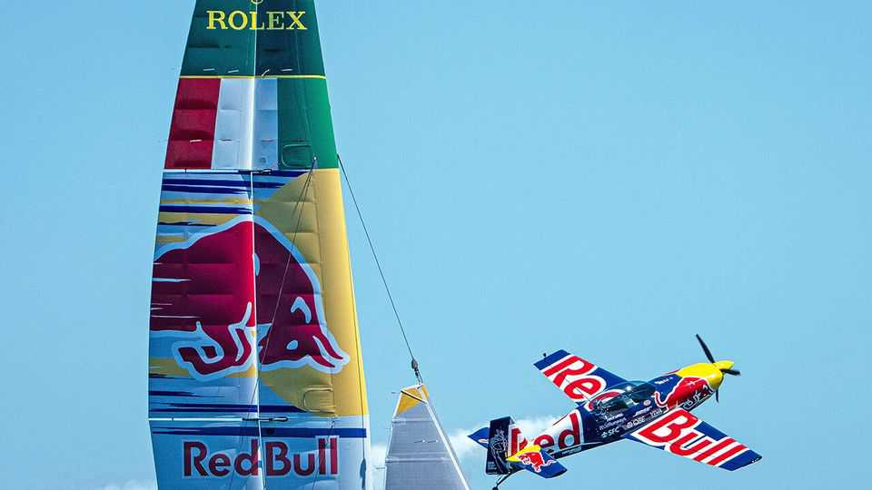

How high can Red Bull fly?
The world’s most formidable marketing machine faces growing threats
July 16th 2026

CAn Red Bull give die Mannschaft wiiings? After Germany was bundled out of the World Cup on June 29th the national football federation turned to Jürgen Klopp to take charge of the team. The celebrated coach—who has agreed in principle to take the job—is currently the Austrian company’s “global head of soccer”, overseeing eight clubs around the world.
Over the decades the world’s leading maker of energy drinks has come to play an outsize role in all manner of sports, from football to Formula One. It is a marketing strategy that Dietrich Mateschitz, Red Bull’s founder, pursued with gusto. Mateschitz adapted his drink in the 1980s from Krating Daeng, a Thai energy tonic. (The Yoovidhya family, its creator’s heirs, own 51% of Red Bull.) The Austrian proved to have a rare talent for marketing. “Red Bull verleiht Flüüügel” (”Red Bull gives you wiiings”) was his idea. So was sponsoring Felix Baumgartner, an Austrian skydiver who in 2012 jumped to Earth from a helium balloon in the stratosphere.
When Mateschitz died in 2022, some thought Red Bull would fall as quickly as it had risen. He had no clear successor: a three-man board, all of whom keep a low profile, took over management. (Mateschitz’s son Mark inherited his 49% stake, but has no operative role.)
Yet Red Bull has continued to fly. Last year it sold 14bn cans, up by 10% from 2024. It has 28% of the global market, well ahead of Monster, its main rival, with 17%. It has stayed aloft mainly by sticking to Mateschitz’s strategy. Even so, threats from regulators and new competitors loom.
The triumvirate that now runs Red Bull has kept to the pricier end of the market. A standard 250ml can costs around $2.40 at Walmart, America’s biggest supermarket. The company still outsources manufacturing to long-term business partners: Rauch Fruchtsäfte, another Austrian firm, mixes and cans the drinks; America’s Ball Corporation supplies the aluminium cans. This has helped Red Bull stay debt-free.
Red Bull continues to spend around 30% of sales on marketing—more than €3bn ($3.4bn) last year. Coca-Cola, the world leader in soft drinks, spends around 10% and Monster 7.5%. It eschews conventional advertising, instead making its own content through Red Bull Media House, Austria’s biggest media company after ORF, the state broadcaster. It encompasses a TV network, film and TV studios, a record label and several magazines.
Not everybody is a fan. Some criticise its sponsorship of extreme sports. Almost two dozen athletes have died while performing its stunts. Last year the European Commission began investigating whether Red Bull had broken EU competition rules by using its dominant position to press retailers to stop selling rivals’ wares or to place them unfavourably.
Another line of criticism concerns the side-effects of its signature product, which contains caffeine, taurine and sugar. The company says that “health authorities around the world have concluded that Red Bull is safe to consume,” and points out that a 250ml can contains the same amount of caffeine as a cup of home-brewed coffee. But studies show that, even in moderate amounts, it is harmful for children, as it increases heart rate and blood pressure. The American Academy of Paediatrics and the Food and Drug Administration recommend that children should avoid energy drinks. Latvia, Lithuania and Poland are among the countries that ban their sale to under-18s. Britain is mulling doing so for under-16s. For its part, Red Bull notes that energy drinks “are not recommended for children”, and that it does not market its products to them.
New competitors are eager to position themselves as a healthier alternative. Celsius, an American brand, contains no added sugar and far fewer calories than Red Bull (but more than twice the caffeine). Known to some as “Red Bull for women”, it has become the number three energy drink in America, after Red Bull and Monster.
For now, Red Bull remains on top. When Mateschitz originally adapted Krating Daeng to European palates, experts told him that no one would want it. He ignored them, charged a premium price for the concoction and built a market for it based largely on its adventurous image. You might call it gravity-defying. ■
To track the trends shaping commerce, industry and technology, sign up to “The Bottom Line”, our weekly subscriber-only newsletter on global business.